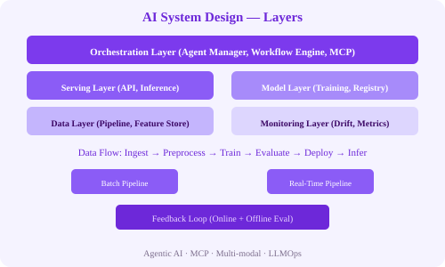

← Back to Index
4. High-Level Architecture

A production AI system can be understood as four interconnected layers, with a fifth cross-cutting layer for observability.
Data Layer
Responsible for ingesting, storing, processing, and serving data for both training and inference.
Data ingestion: Batch (Airflow) and streaming (Kafka) pipelines.Feature store: Centralized repository of features (Feast, Tecton, SageMaker Feature Store).Data lake / warehouse: Raw and processed data storage (S3, Snowflake, BigQuery).Data versioning: DVC, LakeFS — track dataset versions for reproducibility.
Model Layer
Manages model training, evaluation, packaging, and lifecycle.
Training infrastructure: Distributed training (PyTorch DDP, DeepSpeed), hyperparameter tuning (Optuna, Ray Tune).Model registry: Versioned model storage with metadata (MLflow, W&B, Hugging Face Hub).Evaluation: Offline eval on held-out datasets, online eval via A/B testing.Compression: Quantization (FP16, INT8), pruning, distillation for deployment.
Serving Layer
Exposes the model to consumers via APIs with low latency and high throughput.
Inference server: NVIDIA Triton, TorchServe, BentoML, vLLM, TGI.API gateway: Authentication, rate limiting, request validation, routing.Cache: Feature cache (Redis), prediction cache (for identical requests), model cache (GPU memory).Load balancer: Distribute requests across inference replicas.
Orchestration Layer
Coordinates multi-step workflows, agent collaboration, and pipeline execution. Increasingly important in 2026 for agentic AI systems.
Agent orchestrator: Decomposes tasks, delegates to specialized agents, synthesizes results.MCP (Model Context Protocol): Standardized tool and data source integration for LLMs.Workflow engine: Airflow, Prefect, Temporal for batch pipelines; LangGraph, CrewAI for agent orchestration.Feedback loop: Collects user feedback and model outcomes for retraining and drift detection.
Monitoring & Observability Layer (Cross-Cutting)
Spans all layers to provide visibility into system health, model performance, and business impact.
Metrics: Prometheus + Grafana dashboards.Logging: Structured logs per request for debugging and audit.Tracing: Distributed tracing (OpenTelemetry, Jaeger) across microservices and inference calls.Drift detection: Evidently AI, WhyLabs, NannyML — continuous monitoring of data and concept drift.
# Layered request flow (recommendation system)
User request → API Gateway → Auth → Feature Fetch (from Feature Store)
→ Cache Check (Redis) → Model Inference → Post-process → Log → ResponseExercise: Draw the high-level architecture (on paper or using diagrams.net) for an AI-powered document summarization service. Label each layer with the specific technologies you would use (e.g., Kafka for ingestion, Hugging Face for model, Triton for serving, Prometheus for monitoring).
← Previous Index Next: Data Flow →